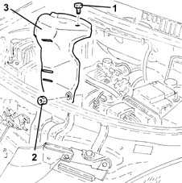
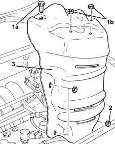

1072C44 exhaust manifold heat shield on bulkhead - r+r
- Path
- Procedures > 10 ENGINE > 1072 INLET AND EXHAUST MANIFOLDS > 1072C exhaust manifolds > 1072C44 exhaust manifold heat shield on bulkhead - r+r
- Kind
- repair procedure (removal / refitting; the operation number is the code)
- Applies to
- engines: 1.2 8v, 1.2 16v, 1.4 16v; all production periods
- Interactive page
- https://sloeber94.github.io/elrnDB-lYpsln/en/#/2428939
Applies to: engines: 1.2 8v; all production periods
 Removing
Removing
 Refitting
RefittingPosition the vehicle on the ramp.
Proceed with removal 1048A10 air cleaner filtering element - replace .
1. Loosen the bolts fixing the exhaust manifold heat shield to the exhaust manifold.
2. Undo the nuts securing the exhaust manifold heat shield to the catalytic converter.
3. Remove the exhaust manifold heat shield.

Applies to: engines: 1.2 16v; all production periods
Removing
RefittingPosition the vehicle on the ramp.
Proceed with removal 1048A10 air cleaner filtering element - replace .
1. Undo the bolt (1a) and the nut (1b) fixing the exhaust manifold heat shield to the exhaust manifold.
2. Undo the nuts securing the exhaust manifold heat shield to the catalytic converter
3. Remove the exhaust manifold heat shield.

Applies to: engines: 1.4 16v; all production periods
Removing
RefittingPosition the vehicle on the ramp.
Proceed with removal 1048A10 air cleaner filtering element - replace .
1. Undo the bolt (1a) and the nuts (1b) fixing the exhaust manifold heat shield to the exhaust manifold.
2. Undo the nuts securing the exhaust manifold heat shield to the catalytic converter
3. Remove the exhaust manifold heat shield.
Applies to: engines: 1.2 8v; all production periods
Refitting
RemovingPlace the exhaust manifold heat shield back in its housing and secure it using the nuts and bolts.
Proceed with refitting 1048A10 air cleaner filtering element - replace .
Remove the car from the ramps.
Applies to: engines: 1.2 16v; all production periods
Refitting
RemovingPlace the exhaust manifold heat shield back in its housing and secure it using the nuts and bolts.
Proceed with refitting 1048A10 air cleaner filtering element - replace .
Remove the car from the ramps.
Applies to: engines: 1.4 16v; all production periods
Refitting
RemovingPlace the exhaust manifold heat shield back in its housing and secure it using the nuts and bolt.
Proceed with refitting 1048A10 air cleaner filtering element - replace .
Remove the car from the ramps.
Topics linked from this page (1)
Topics that link to this page (17)
- T10 PASSENGER COMPARTMENT WIND NOISE, LOWER AREA / (UNDERBODY)
- 0510A30 cam lift - check with cam cover(s) removed
- 1004B10 power unit with manual gearbox - r + r
- 1016B10 single cylinder head extension - change gasket
- 1016B12 single cylinder head extension - r r with timing belt removed - replace
- 1016C10 cylinder head - r + r and replace gasket
- 1020A20 crank case oil sump - r + r clean seals for sealant application
- 1020D14 front crank shaft oil seal cover - r + r and replace seals for versions with oil pump on crank shaft, timing side
- 1020D26 flywheel side oil seal cover - r+r
- 1020D30 oil seal cover, fly wheel side - r + r and replace seals
- 1028H20 piston with connecting rod - r r
- 1036L10 camshafts in cylinder head extension - r r - includes cylinder head extension replacement if necessary
- 1072C16 exhaust manifold with catalytic converter - r r
- 1088D24 rigid pipe for coolant inlet to water pump - r + r
- 1810A20 clutch - r + r
- 2110A10 manual gearbox and differential - r + r
- 2110A60 manual gearbox/engine coupling bracket - r+r